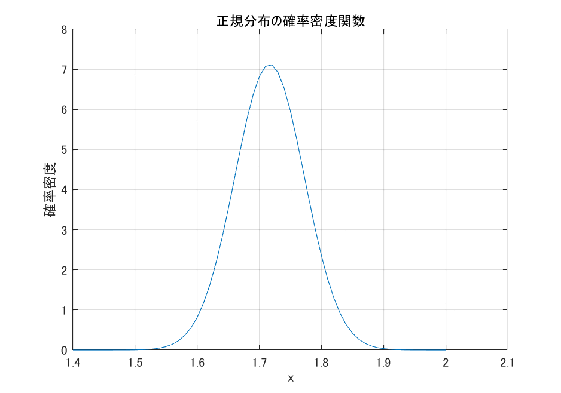

生物統計演習 第2回 推定
推定統計では、少数の標本から母集団全体を推定する。母集団は規模の十分大きい集団であり 、母集団から観察あるいは実験によって少数の標本(sample)を得る。母平均および母分散を、未知の定数\(\mu\)(みゅーとよむ)および\(\sigma^2\)(しぐまにじょうとよむ)、標本平均と標本分散を\(m\)および標本の分散を\(s^2\)とおくと、経験的に\(\mu \simeq m\)および\(\sigma^2 \simeq s^2\)とわかるが、どのように似ているかはわからない。通常、母数は未知なので標本から母数をよりよく推定したい。
 図.
標本から母集団の母数の推定
図.
標本から母集団の母数の推定
1. 期待値と分散
1-1. 離散変数の期待値
\(X\)が確率変数の場合、その期待値を\(E(X)\)とおく。\(X\)が離散分布する変数の場合、\(X=X_i\)になるときの確率を\(p_i\)とすると \[ E(X) = \sum_{i=1}^{n} p_i X_i \] と表す。 離散分布する変数の例としてはサイコロや宝くじがある。サイコロを1回投げた場合の期待値は、\(\frac{1}{6} \cdot 1 +\frac{1}{6} \cdot 2 +\frac{1}{6} \cdot 3 +\frac{1}{6} \cdot 4 +\frac{1}{6} \cdot 5 +\frac{1}{6} \cdot 6 = \frac{1+2+3+4+5+6}{6}=3.5\)である。また、平成28年11~12月に行われた年末ジャンボ宝くじの発売数と当選数、当選金額は以下のとおりである。
宝くじ当せん金・本数（発行枚数が5億枚の場合）
| 等級等 | 当せん金 | 本数 |
|---|---|---|
| 1等 | 700,000,000円 | 25本 |
| 1等の前後賞 | 150,000,000円 | 50本 |
| 1等の組違い賞 | 500,000円 | 4,975本 |
| 2等 | 15,000,000円 | 500本 |
| 3等 | 1,000,000円 | 5,000本 |
| 4等 | 10,000円 | 500,000本 |
| 5等 | 3,000円 | 5,000,000本 |
| 6等 | 300円 | 50,000,000本 |
この場合、期待値は149.975円となる。
1.2 連続変数の期待値
\(x\)が連続分布する変数の場合、\(x\)の確率密度関数を\(f(x)\)とすると、 \[ E(x) = \int_{-\infty}^{\infty} xf(x) dx \] と表す。\(x\)と\(x\)が起こる確率\(P(x)\)の積の総和が期待値であることには変わりはない。
1-3. 確率変数Xの期待値と分散
離散変数および連続変数について、以下の法則が成り立つ。 #### 1-3a. 期待値の性質 確率変数\(X\)に関する母平均\(\mu_X\)の定義は、期待値$E[X] = _X \(である。以下が期待値の性質である。ただし\)a$は定数とする。 \[ E[a] = a \quad \text{(定数の期待値は定数)}\\ E[X + a] = E[X] + a \quad \text{(定数は外に出せる1)}\\ E[aX] = aE[X] \quad \text{(定数は外に出せる2)}\\ E[X+Y] = E[X]+E[Y] \quad \text{(期待値の和は、和の期待値と等しい)}\\ E[XY] = E[X]E[Y] \quad \text(ただし、XとYが独立の場合) \\ \]
1-3b. 分散の性質
確率変数\(X\)の母分散\(\sigma_X^2\)の定義は、$V[X] = E[(X-E[X])^2] = _X^2 \(である。以下が分散の性質である。ただし\)a$は定数とする。 \[ V[a] = 0 \quad \text{(定数の分散は0)}\\ V[aX] = a^2V[X] \quad \text{($X$の$a$倍の分散は、$X$の分散の$a^2$倍)}\\ V[X + a] = V[X] \\ \] である。
1-3c. 共分散の公式
確率変数\(X\)と\(Y\)について\(V[X] = \sigma_X^2\)および\(V[Y] = \sigma_Y^2\)のとき、 \[ V[X \pm Y] = V[X] + V[Y] \pm 2 \cdot Cov[X,Y] \] である。ただし、Cov[X,Y]は 共分散(co-variance) といい、 \[ Cov[X,Y] = E[ ( X - E(X) )( Y - E(Y))] \]
ここで、\(X\)と\(Y\)が独立の場合は\(Cov[X,Y]=0\)より \[ V[X \pm Y] = V[X] + V[Y] \] すなわち、分散は\(X\)と\(Y\)が独立ならば、\(X \pm Y\)の分散は、\(X\)の分散と\(Y\)の分散に分割できる。
1-3d. 練習問題
- イネの10アール(a)当たり収量について、品種Aの収量をしめす確率変数\(A\)は母平均386.1 kg/10aおよび母標準偏差25.4 kg/10aをもつ。コムギの20アールにおける母平均と母標準偏差はいくつが期待されるか。
- イネ品種Bの確率変数\(B\)は母平均333.6 kg/10aおよび母標準偏差は22.4 kg/10aをもつと仮定する。品種Aを10 a、品種Bを10 a育成した場合、両者を合わせたコムギ収量の母平均と母標準偏差はいくつか。ただし、品種Aと品種Bの育成は相互に影響を与えない(独立)とする。
- 品種Aを10 a、品種Bを20 a育成した場合、両者を合わせたイネ収量の母平均と母標準偏差はいくつか。ただし、品種Aと品種Bの育成は相互に影響を与えない(独立)とする。
1-3e. 練習問題こたえ
- \(E[2A] = 2E[A] = 2 \cdot 386.1 = 772.2\)、\(V[2A] = 2^2 \cdot V[A] = 4 \cdot 25.4^2 = 2580.64\)。ゆえに母平均は772.2、母標準偏差は\(\sqrt{2580.64}=50.8\)である。
- \(E[A+B] = E[A]+E[B]=386.1+333.6 = 719.7\) kg/10aである。また、\(V[A+B]=V[A] + V[B] = 25.4^2 + 22.4^2 =1146.92\)より、母標準偏差は\(\sqrt{1146.92}\fallingdotseq33.87\)である。
- \(E[A+2B] = E[A]+E[2B]=386.1+2 \cdot 333.6 = 1053.3\) kg/10aである。また、\(V[A+2B]=V[A] + V[2B] = 25.4^2 + 4 \cdot 22.4^2 =2652.2\)より、母標準偏差は\(\sqrt{2652.2}\fallingdotseq51.50\)である。
1-4. 標本\(X\)の期待値と分散
ふつう、母平均と母標準偏差はわからない。少数の標本から母平均と分散を推定する数学的な正当性は以下のように示される。数式よりは、下線の部分を暗記しましょう。
1-4a. 標本\(X\)の期待値
\[ E[X] = \mu_X \] 標本\(X\)の期待値は母平均\(\mu_X\)と等しい。
1-4b. 標本平均\(\bar{X}\)の期待値
\[ E[\bar X] = \mu_X \] 母平均\(\mu_X\)を推定するためには、標本平均\(\bar{X}\)を計算する。証明は大数の法則である。
1-4c. 標本不偏分散\(s^2\)の期待値
標本不偏分散を$s^2 = $と計算したとき、 \[
E[s^2] = \sigma_X^2
\] である。母分散\(\sigma_X\)を推定するためには\(s^2\)を計算する。Rやmatlabではvar()関数にて計算する。
1-4d. 標本平均の分散\(V[\bar X]\)の期待値
\[ V[\bar X] = \frac{\sigma_X^2}{n} \] 標本平均の母分散を推定したい場合は、\(s^2/n\)で推定する。証明は中心極限定理である。R/matlabではvar()をサンプル数で割る。さらに、平方根をとった値を標準誤差 (Standard error) という。確率変数\(X\)の標準偏差が標準偏差と呼び、確率変数\(X\)の平均値\(\bar{X}\)の標準偏差を標準誤差と呼ぶ。
1-4e. 練習問題
コムギ品種Aの10アール(a)当たり収量について、5箇所の調査を行い、\(280, 290, 300, 260, 255\) kg/10aのデータを得た。 1. 標本平均と不偏分散を求めよ。 1. コムギ品種Aの母平均、母分散、母標準偏差を推定せよ。 1. 標本平均の標準誤差を求めよ。
1-4f. 練習問題こたえ
1.標本平均はmean()関数、不偏分散はvar()関数にて求める。
a = [280, 290, 300, 260, 255]
mean(a)
277
var(a)
370よって、標本平均は277, 不偏分散は370
- 母平均の不偏推定値は標本平均である。母分散の不偏推定量は不偏分散である。母分散の平方根は母標準偏差(定義)である。
sqrt(var(a))
19.23538よって、母平均の不偏推定値は277、母分散の不偏推定量は370、母標準偏差の不偏推定値は370の平方根の19.23538である。
- 標本平均の標準誤差は、不偏分散を標本数で割った平方根。
sqrt(var(a)/5)
8.602325よって、標本平均の標準誤差は8.602325である。
2. 区間推定
推定の主な目的は母集団のパラメータを推定することであるが、点推定と区間推定がある。これまで点推定について説明してきた。区間推定について説明しよう。区間推定においては確率モデルを考える必要がある。確率モデルとして最も有名な正規分布について考える。
2-1. 正規分布
正規分布 (Normal distribution) はもっとも代表的な連続型の確率密度関数であり、非常に重要である。
\[ f(x) = \frac{1}{\sqrt{2\pi \sigma^2}} \mathrm{exp} \left\{\frac{-(x-\mu)^2}{2\sigma^2} \right\} \quad (-\infty < x < \infty) \]
\(\mathrm{exp}(x)\)はネイピア数\(e=2.718\cdots\)の\(x\)乗であることを示す。\(x\)は平均\(\mu\)、分散\(V(x)=\sigma^2\)の 正規分布に従うと読み、\(x \sim \mathcal{N}(\mu, \sigma^2)\)と表記する。山なりの曲線である\(y=e^{-x^2}\)について、\(\mu\)でx軸方向の移動、\(\sigma^2\)でx軸方向に伸びちじみさせたものである。ドイツの数学者、天文学者、物理学者のC. F. ガウスは、天文観測データの誤差が正規分布にしたがうことを発見した。正規分布はガウス(ガウシアン)分布とも呼ばれる。
2-1a. 正規分布の一例
厚生労働省平成21年度体力・運動能力調査によると、日本人男性20才の平均身長(m)は1.7166、標準偏差は0.0560、女性の平均身長は1.5832、標準偏差は0.0552であり、身長の分布は正規分布に従うことが知られている。男性の正規分布の確率密度関数のグラフを1.2mから2.0mの範囲で描画しよう。
% パラメータ設定
mu = 1.7166; % 平均値
sigma = 0.0560; % 標準偏差
x = 1.4:0.01:2; % x軸の値域
% 正規分布の確率密度関数（PDF）を計算
pdf = (1 / (sigma * sqrt(2 * pi))) * exp(-(x - mu).^2 / (2 * sigma^2));
% グラフを描画
plot(x, pdf);
title('正規分布の確率密度関数');
xlabel('x');
ylabel('確率密度');
grid on;正規分布関数はコピペすればよいが、一回は書いてみると掴めると思います。

図. 平均1.7166、分散0.003136の正規分布
確率密度関数\(f(x)\)は\(x=1.7166\)に最大値をもち、そこから対称に裾野を持っていることがわかる。
2-2. 連続変数の確率
2-2a. 確率密度関数
連続型の確率変数\(x\)について、\(x\)の範囲\(a \leq x \leq b\)において、確率が \[ P(a \leq x \leq b) = \int_a^b f(x) dx \] と表される場合、\(f(x)\)を 確率密度関数 (probability density function) という。 \(f(x)\)が正規分布の時、\(x\)の定義域である\(-\infty<x<\infty\)について積分すると、確率の要件を満たすため \[ P(-\infty \leq x \leq \infty) = \int_{-\infty}^{\infty} f(x) dx = 1 \] となるように\(f(x)\)は定義される。確率は区間\(a \leq x \leq b\)における定積分にて定義されるため、\(a=b\)の場合、 \[ P(a \leq x \leq a) = \int_a^a f(x) dx = 0 \] となり、\(P(x=a)=0\)、すなわち微小な一点の確率はゼロである。

図. 確率密度関数
身長の場合で説明すると、121.1cmと121.2cmの間には、無限個の点が存在するのでその「点」における確率はほぼ0である、と考えればよい。連続変数の場合、確率は点ではなく 区間で推定する。 確率密度関数には、正規分布(normal distribution)、指数分布 (exponential distribution)、 ガンマ分布(gamma distribution)、ベータ分布(Beta distribution) などがある。
2-2b. 演習問題
男性で身長1.7から1.8mの人は全体の何%か。
連続型変数の確率を計算するには、区間の積分をする必要があるが、これは陽(あらわ)に解けないので数値計算にて近似解を求める。 Rコマンドintegrate(ユーザ定義関数、lower=a, upper=b)にて数値積分を行う。
% 正規分布のパラメータ設定
mu = 1.7166; % 平均値
sigma = 0.0560; % 標準偏差
% 積分範囲を指定
a = 1.7; % 下限
b = 1.8; % 上限
% 正規分布の確率密度関数（PDF）を定義
pdf = @(x) (1 / (sigma * sqrt(2 * pi))) * exp(-((x - mu).^2) / (2 * sigma^2));
% 区間 [a, b] での積分を計算
probability = integral(pdf, a, b)
0.5483すなわち、全体の54.8%の人間が身長1.7から1.8mの区間に入る。
2-2c. 問題
身長が1.80m以上の男性は、日本全体で何%に入るだろうか。
a = 1.80
b = Inf
probability = integral(pdf, a, b)
0.0682で全体の上位6.8%に入る。つまり、平均と標準偏差を知ることにより、確率を推定することが可能である。
2-3. 中心極限定理 (標本平均は正規分布に従う)
平均値に関する性質として、以下の重要な定理が知られる。
確率変数\(X\)が母平均\(\mu\)と母分散\(\sigma^2\)のとき、nが十分大きい場合、 標本平均\(\bar{X}\)は母平均\(\mu\)、分散\(\sigma^2/n\)の正規分布に従う(\(\bar{X} \sim \mathcal(\mu, \sigma/\sqrt{n})\))。
標準化すると、
確率変数\(X\)が母平均\(\mu\)と母分散\(\sigma^2\)のとき、nが十分大きい場合、 標本平均\(\bar{X}\)の標準化スコア\(Z = (\bar{X} - \mu) / (\sigma / \sqrt{n})\)は 母平均\(0\)、分散\(1\)の標準正規分布に従う(\(Z \sim \mathcal(0, 1\)))。
以上より、母集団が正規分布に従っていなくても、平均値は母平均、分散\(\sigma^2/n\)の正規分布に従って現れることの正当性を主張する根拠となっている。
2-4. 平均値の信頼区間の推定
2-4a. 95%信頼区間
標準正規分布\(f(z)\)について\(-\infty < z < T_1\)の積分を下側累積確率\(\Phi(z < T_1)\)(ふぁいとよむ)という。逆に$T_2 < z < \(の上側累積確率は、\)(T_2 < z) = 1-(z < T_2)$にて求める。
下側累積確率が0.025となるときの\(T_1\)、および上側累積確率が0.025 となるときの\(T_2\)を考えたとき、\(T_1\)と\(T_2\)に挟まれた領域を95%信頼区間という。すなわち\(z\)は95%の確率で信頼区間に存在すると期待される。そのため。\(T_1\)を下側信頼限界、\(T_2\)を上側信頼限界ともいう。
MATLABのnorminv(確率)にて、標準正規分布において\(-\infty\)から\(z\)までの累積確率が、ユーザーが与えた累積確率になるときの\(z\)を求めることができる。

図. 95%信頼区間
# T1を求める場合
norminv(0.025)
-1.9600
# T2を求める場合
norminv(0.975)
1.9600 # 標準正規分布は左右対称なので、T2はT1にマイナス1をかけた値。よって、\(Z\)の信頼区間から、\(\bar{X}\)の範囲を求めるように逆算すると
\[ -1.959964 <Z = (\bar{X} - m) / (\sigma / \sqrt{n}) < 1.959964 \\ -1.959964 \cdot \sigma / \sqrt{n} <\bar{X} - m < 1.959964 \cdot \sigma / \sqrt{n} \\ -1.959964 \cdot \sigma / \sqrt{n} + m < \bar{X} < 1.959964 \cdot \sigma / \sqrt{n} + m \] であり、\(\bar{X}\)の95%の信頼区間である。信頼区間に基づいて\(\bar{X}\)を区間で推定する場合を区間推定という。対照的に、\(\bar{X}=(X_1 + X_2 + \cdots + X_n)/n\)のように、単一の数字として推定することを点推定という。
2-4b. 補足
母平均\(\mu\)は未知だが定数である。一方、確率変数\(X\)がばらつくので、標本平均\(\bar{X}\)も標本が変わるたびばらつく。毎回違う値なんだけれども、$ -1.959964 / + m < {X} < 1.959964 / + m \(の区間に95\%の確率で入る、という意味である。標本をとって標本平均を計算する、を繰り返すと、100回に95回は95\%信頼区間の中に入る頻度である。標本平均として\){X}\(と\)m\(が説明の中で出てくるが、\){X}\(は変数ある一方、\)m$は標本から計算される具体的な定数であり、両者は異なる。
3. 標本平均\(\bar{X}\)の推定
3-1. 母分散既知の場合
3-1a. 1標本問題
ある道の駅でリンゴMサイズ1箱を購入し、入っていた12個のリンゴの重さ(グラム)を計測したところ、\(A = \{329.5, 316.7, 336.3, 336.0, 325.9, 327.2, 326.4, 356.5, 325.1, 324.4, 341.0, 353.5\}\)であった。Mサイズの母分散\(9^2\)であることが分かっている。標本平均\(\bar{A}\)についての 点推定と95%信頼区間の推定を行いなさい。
考え方
おなじ確率分布から得られるデータ群が1つの場合である。これを1標本問題という。母分散がすでに分かっていないと、問題として成立しないので、標本が一つで母分散が示されていれば、1標本問題として処理しましょう。
解答例
\(E[\bar{A}]=\mu\)より、標本平均が母平均の一致推定量である。よって標本平均\(\bar{A}=(329.5 + 316.7 + 336.3 + 336.0 + 325.9 + 327.2 + 326.4 + 356.5 + 325.1 + 324.4 + 341.0 + 353.5)/12 \fallingdotseq 333.2\)が点推定量である。一方、95%信頼区間は $ -1.959964 / + 333.2 < {A} < 1.959964 / + 332.3 $である。
3-1b. 2標本問題
ある飼育法により昆虫個体群XとYを飼育したとする。飼育法以外の条件を均一にそろえたうえで、個体群XおよびYの昆虫重量 (mg)は\(X=\{27.6, 19.0, 20.1, 24.7, 21.8, 21.7\}\)、\(Y=\{26.1, 27.1, 23.0, 25.9, 19.4, 22.7\}\)であった。個体群XおよびYの母分散は\(\sigma_X^2 = 4.0^2\)および\(\sigma_Y^2 = 2.9^2\)であることがわかっている。\(X\)と\(Y\)平均の差の確率変数\(\bar{X}-\bar{Y}\)についての点推定および区間推定を行いなさい。
考え方1
上記は独立の確率分布から得られるデータ群が二つの場合である。これを二標本問題といい、しばしばこの両者を比較する問題である。この節では、この二標本それぞれの母分散がすでに分かっている場合について解説をする。一方、母分散がわかっていない場合、次節のカイ二乗分布とt分布の考え方が必要になってくる。
考え方2
難しいが、順を追って処理しよう。 Step 1. まずは定義 確率変数\(X \sim \mathcal{N}(\mu_x, \sigma_x^2)\)および\(Y \sim \mathcal{N}(\mu_y, \sigma_y^2)\)があり、標本平均の確率変数を\(\bar{X} = 1/m (X_1 + X_2 + \cdots + X_m)\)および、\(\bar{Y} = 1/n (Y_1 + Y_2 + \cdots + Y_ n)\)とおく。
Step 2. 二つの正規分布の和あるいは差に由来する正規分布の特性** 中心極限定理より、\(\bar{X} \sim \mathcal{N}(\mu_x, \sigma_x^2/m)\)および\(\bar{Y} \sim \mathcal{N}(\mu_y, \sigma_y^2/n)\)であるから、正規分布あるいは期待値の特性より、\(\bar{X}-\bar{Y} \sim \mathcal{N}(\mu_x - \mu_y, \sigma_x^2/m + \sigma_y^2/n)\)である。
Step 3. 標本平均の差に関する点推定量 \(E[\bar{X} -\bar{Y}] = E[\bar{X}] -E[\bar{Y}] = \mu_x - \mu_y\)だから、 \(\bar{X} -\bar{Y}\)が一致推定量。
Step 4. 標準正規分布への帰着 つぎに、95%信頼区間推定を行う。\(\bar{X}-\bar{Y}\)の標準化\(Z\)は、定義通り \[ Z = \frac{(\bar{X}-\bar{Y}) - (\mu_x - \mu_y)}{\sqrt{\sigma_x^2/m + \sigma_y^2/n}} \] であり、標準正規分布\(\mathcal{N}(0,1)\)に従う。
Step 5. 区間推定 95%信頼区間において、下側信頼限界(\(z_1\))は\(z_1=-1.959964\)、上側信頼限界(\(z_2\))は\(z_2=1.959964\)だから、 \[ z_1 < Z < z_2 \\ -1.959964 < \frac{(\bar{X}-\bar{Y}) - (\mu_x - \mu_y)}{\sqrt{\sigma_x^2/m + \sigma_y^2/n}} < 1.959964 \\ -1.959964 \cdot \sqrt{\sigma_x^2/m + \sigma_y^2/n} < (\bar{X}-\bar{Y}) - (\mu_x - \mu_y) < 1.959964 \cdot \sqrt{\sigma_x^2/m + \sigma_y^2/n} \\ -1.959964 \cdot \sqrt{\sigma_x^2/m + \sigma_y^2/n} + (\mu_x - \mu_y) < \bar{X}-\bar{Y} < 1.959964 \cdot \sqrt{\sigma_x^2/m + \sigma_y^2/n} + (\mu_x - \mu_y) \\ \]
解答例
標本平均の差\(m_x - m_y\)が標本平均の差の一致推定量である。\(m_x = (27.6+19.0+20.1+24.7+21.8+21.7)/6 =22.48333\)、\(m_y = (26.1+27.1+23.0+25.9+19.4+22.7)/6=24.03333\)より\(E[\bar{X} - \bar{Y}]=22.48333-24.03333 = -1.55\)が標本平均の差の点推定量。95%信頼区間については式(\(\ref{eq:slbemgj5}\))に代入して、\(-5.50 < \bar{X} - \bar{Y} < 2.40\)である。
3-2. 母分散未知の場合
一般に母分散がすでに分かっているケースは少ない。標本分散\(s^2\)から母分散\(\sigma^2\)を推定するため、\(\chi^2\)(カイ二乗)分布を新たに導入しよう。
3-2a. \(\chi^2\)(カイ二乗)分布
\(\chi^2\)(カイ二乗)分布について紹介する。確率変数\(X \sim \mathcal{N}(\mu, \sigma^2)\)のとき、標準化スコア\(Z\)について、 \[ \chi^2 = Z_1^2 + Z_2^2 + \cdots + Z_n^2 \] を自由度\(n\)の\(\chi^2\)(カイじじょう)値と定義する。標本不偏分散\(s^2\)と母分散\(\sigma^2\)について、自由度\(n-1\)のカイ二乗値\(\chi^2(\mathrm{df}=n-1)\)は \[ \chi^2 = \frac{s^2}{\sigma^2} \cdot (n-1) \] が成り立つ。\(\sigma^2\)が未知の場合でも、標本分散\(s^2\)と自由度\(n-1\)の\(\chi^2\)分布を用いて推定できる。カイ二乗分布は標本分散\(s^2\)と母分散\(\sigma^2\)をつなぐ、大切な分布である。 \(\chi^2\)分布表を見ることで値がわかる(表)。
3-2b. 自由度
カイ二乗分布は自由度によって変化するので、自由度の考え方を記す。自由度とは、自由に動ける変数のかずの事である。例えば、\(a+b = 2\)とおいたとき、この式を満たすように自由に動くことができる変数の数は\(a\)あるいは\(b\)の１つである。よって自由度は1である。集合\(X=\{x_1, x_2, \cdots, x_n\}\)の要素の平均値が\(m_x\)であるとき、\(m_x\)を定数に固定した場合、自由に動ける変数の数(自由度)は\(n-1\)個となる。\(n-1\)個目の変数が決まった場合、最後の変数の値は自動的に決まる。自由度の選択は統計解析の根幹にかかわる重要な要素である。
3-3. \(t\)分布
3-3a. \(t\)分布の導入
\(X \sim \mathcal{N}(\mu_x, \sigma_x^2)\)のとき、中心極限定理から\(\bar{X} \sim \mathcal{N}(\mu_x, \sigma_x^2/m)\)。\(\bar{X}\)を \[ Z = \frac{\bar{X}-\mu}{\sqrt{\sigma^2/n}} \] にて標準化した\(Z\)は\(Z \sim \mathcal{N}(0,1)\)。
しかし、通常\(\sigma^2\)は未知であるため、代わりに\(s^2\)を用いた新たな統計量として \[ t = \frac{\bar{X}-\mu}{\sqrt{s^2/n}} \] を定義する。これをスチューデントの\(t\)統計量とよぶ。これはもはや正規分布には従わない。ここで前述のカイ二乗分布を用いて表すと、 \[ t = Z/ \sqrt{\frac{s^2}{\sigma^2}} \] \[ t = Z / \sqrt{\chi^2 (n-1)} \] と書ける。\(t\)分布とは、数理統計的には分子は標準正規分布N(0,1)、分母は自由度\(n-1\)の\(\chi^2\)分布と\(n-1\)の積の平方根にて表される分布であることがわかる。\(t\)統計量は自由度\(n-1\)の\(t\)分布に従う。これを\(t \sim t(n-1)\)と書く。
通常これも\(t\)分布表を参照すれば良い。あるいは統計ソフトにて正確な値を算出することができる。\(t\)分布は\(n \rightarrow \infty\)で標準正規分布\(\mathcal{N} (0, 1)\)に近づく。これはカイ二乗分布において\(s^2 \simeq \sigma^2\)になることによる。ちなみに”スチューデント(Student)“とは、\(t\)分布を発見した英国の統計学者William Gosset (1876-1937)が論文を発表する際に自分の名前を”Student”としたことに由来する。自分が得た実験データについて、比較を行う際、この\(t\)検定を使う場面は多い。
3-3b. \(t\)分布と\(z\)分布(標準正規分布)をRで比較してみよう！
とにかくやってみる。自由度(degree of freedom (df))が大きくなるにつれて 準正規分布に近づくのがお分かりか。dnormは標準正規分布をあらわす。 dtは\(t\)分布で自由度を要求する。
hold on; % 複数のプロットを重ねて表示するために"hold on"を使用
x = -4 : 0.01 : 5 ; % x軸の値域を指定
pdf = tpdf(x, 3); % t分布、自由度3
plot(x, pdf, "red");
pdf = tpdf(x, 10); % t分布、自由度10
plot(x, pdf, "green");
pdf = tpdf(x, 20); % t分布、自由度20
plot(x, pdf,"blue");
pdf = normpdf(x); % t分布、自由度20
plot(x, pdf,"black");
**図. 標準正規分布にどんどん近づく\(t\)分布$$
3-4. 母分散が未知だが等しいと仮定するとき(\(\sigma_x^2 = \sigma_y^2 = \sigma^2)\)
例題
ある飼育法により昆虫個体群XとYを飼育したとする。飼育法以外の条件を均一にそろえたうえで、個体群XおよびYの昆虫重量 (mg)は\(X=\{27.6, 19.0, 20.1, 24.7, 21.8, 21.7\}\)、\(Y=\{26.1, 27.1, 23.0, 25.9, 19.4, 22.7\}\)であった。個体群XおよびYの母分散は不明であるが、等しいと仮定する。\(X\)と\(Y\)平均の差\(\bar{X}-\bar{Y}\)についての点推定および区間推定を行いなさい。
\(t\)分布を例題に当てはめて考える
\(\sigma_x^2 = \sigma_y^2 = \sigma^2\)より \[ Z = \frac{(\bar{X}-\bar{Y}) - (\mu_x - \mu_y)}{\sqrt{\sigma_x^2/m + \sigma_y^2/n}} \\ = \frac{(\bar{X}-\bar{Y}) - (\mu_x - \mu_y)}{\sqrt{(1/m + 1/n)\sigma^2}} (\because \] ここで\(X\)と\(Y\)の標本不偏分散のプールした分散 (pooled variance)\(s_p^2\) を考える。 \[ s_p^2 = \frac{\sum_{i=1}^{m}(X_i - \bar{X})^2 + \sum_{j=1}^{n}(Y_j - \bar{Y})^2}{(m-1) + (n-1)} \] \(X\)と\(Y\)が与えられている場合は、上記のように計算できるが、\(s_x^2\)および\(s_y^2\)のみ与えられている場合は、 \[ s_p^2 = \frac{(m-1)s_x^2 + (n-1)s_y^2}{(m-1) + (n-1)} (\because s_x^2 = \frac{\sum_{i=1}^{m}(X_i - \bar{X})^2}{m-1}) \] と求める。(注釈: \((m-1)s_x^2\)は\(s_x^2\)を求める際に用いた自由度をかけることで、\(x\)に由来する誤差平方和を再抽出している。\(y\)についても同様。自由度\((m-1)+(n-1)\)でわる理由は、\(x\)および\(y\)の平均値\(m_x\)と\(m_y\)の2条件の制約を受けたもとでの自由度なので、m+n-2である。) \[ t = \frac{(\bar{X}-\bar{Y}) - (\mu_x - \mu_y)}{\sqrt{(1/m + 1/n) s_p^2}} \] となり、２標本\(t\)統計量は自由度\(m+n-2\)の\(t\)分布に従う。
考え方2 信頼区間の推定
以下の図を見てほしい。\(t\)分布は\(t=0\)について対称であるので、95%信頼区間の下側信頼限界は \(\Phi(T_1 < t) = (1-0.95) / 2 = 0.025\)を満たす\(T_1\)であり、上側信頼限界は\(1 - \Phi(T_2 > t) =1 - (1 - 0.025) = 0.025\)を満たす\(T_2\)である。R関数のqt(累積確率, df=m+n-2)にて、t分布において\(-\infty\)から\(t\)までの累積確率が、ユーザーが与えた累積確率になるときの\(t\)を求めることが できる。自由度が\(m+n-2=6+6-2=10\)のときの上側および下側信頼限界を求める。

図. \(t\)分布における信頼区間推定。ちょっと形が違うのが伝わります！？
% T1を求める場合
tinv(0.025, 10)
-2.2281
% T2を求める場合
tinv(0.975,10)
-2.2281 % T1にマイナス1をかけただけの値であることに注意よって、95%信頼区間は、 \[ -2.228139 < t = \frac{(\bar{X}-\bar{Y}) - (\mu_x - \mu_y)}{\sqrt{(1/m + 1/n) s_p^2}} < 2.228139 \] \(\bar{X}-\bar{Y}\)で整理して \[ -2.228139 \cdot \sqrt{(1/m + 1/n) s_p^2} + (\mu_x - \mu_y) < \bar{X}-\bar{Y} < 2.228139 \cdot \sqrt{(1/m + 1/n) s_p^2} + (\mu_x - \mu_y) \\ \] それではMATLABの標準関数でコツコツ解いてみよう。
X= [27.6, 19.0, 20.1, 24.7, 21.8, 21.7]
Y = [26.1, 27.1, 23.0, 25.9, 19.4, 22.7]
mean_X = mean(X) % Xの標本平均 値は22.48333
mean_Y = mean(Y) % Yの標本平均 値は24.03333
var_X = var(X) % Xの標本不偏分散 値は9.997667
var_Y = var(Y) % Yの標本不偏分散 値は8.294667 (等しいと仮定する)
pooled_var = (var_X * 5 + var_Y * 5 ) / (6+6-2) % 9.146167
% 標本平均の差の推定値
mean_X - mean_Y
-1.55
% 95%下側信頼限界をもとめる
tinv(0.025,10)*( sqrt( ( 1/6 + 1/6 ) * pooled_var) )+(mean_X - mean_Y)
-5.4405
% 95%上側信頼限界をもとめる
tinv(0.975,10)*( sqrt( ( 1/6 + 1/6 ) * pooled_var) )+(mean_X - mean_Y)
2.3405実際のところ、MATLABの専用関数ttest2()関数で一撃である。等分散性を仮定する場合は、Vartype’, ’equal’とする。
[h, p, ci, stats] = ttest2(X, Y, 'Vartype', 'equal');
% 今日は95%信頼区間のみを確認しましょう
ci
-5.4405 2.3405
% 99\%信頼区間を求めたい場合はalphaを0.01にする。alphaは次回行うが、有意水準で
% ciには 1- alphaの信頼区間が出てくる
[h, p, ci, stats] = ttest2(X, Y, 'Vartype', 'equal','Alpha', 0.01);
ci
-7.0837 3.98373-5. 母分散が未知だが等しいとは限らないとき(\(\sigma_x^2 \neq \sigma_y^2\))
の\(\sigma_x^2\)に\(s_1^2\)、\(\sigma_y^2\)に\(s_2^2\)を代入した \[ t = \frac{(\bar{X}-\bar{Y}) - (\mu_x - \mu_y)}{\sqrt{s_1^2/m + s_2^2/n}} \] は近似的に自由度が \[ \nu = \cfrac{\left( \cfrac{s_1^2}{m} + \cfrac{s_2^2}{n} \right)^2}{\cfrac{(s_1^2/m)^2}{m-1}+\cfrac{(s_2^2/n)^2}{n-1}} \] に最も近い整数\(\nu^*\)(ニュー、スターと読む)の\(t\)分布\(t(\nu^*)\)に従うことが知られている。これをウェルチの近似法という。
matlabでは、先ほどのttest2()関数のうち、等分散性を仮定しないvar.equal = FALSEを指定する。
[h, p, ci, stats] = ttest2(X, Y, 'Vartype', 'unequal');
ci
-5.4450 2.3450レポート課題
まず課題データをmatlabでダウンロードし、オブジェクトに保存してください。
URL3 = "https://raw.githubusercontent.com/qikushu/stat/master/kadai_R3.txt"
%データ読み込み
kadai_data3 = readtable(URL3)
% カテゴリ型への変換
kadai_data3.C813 = categorical(kadai_data3.C813)
kadai_data3.R902 = categorical(kadai_data3.R902)今回は日本型イネ台中65号とアウス型(いわゆる印度型の一種)イネDV85の交雑F2を自殖して得られた 組換え自殖系統群(Recombinant Inbred Line)という種類のイネで、ほぼすべての遺伝子型が台中65号ホモ接合型(課題データではAと表記)とDV85ホモ接合型(課題データではBと表記)に固定している。それは今回の統計の授業には関係ないが、とにかく、いわゆるメンデルの遺伝の法則のAAホモ型とBBホモ型でABのヘテロ接合型はほぼない、ということだ。
HD93とは1993年にイネを播種して出穂するまでの到穂日数の日数について、この系統群について観察した結果である。この到穂日数と関連のあるゲノム領域を探索するため、100個以上のDNAマーカーを用いて遺伝子型を解析している。
今回の課題では、そのうち染色体1に座乗(ざじょう)するDNAマーカーC813と染色体8に座乗するDNAマーカーR902によって調査したこのゲノム領域の遺伝子型が判明している。HD93が90とは大体播種から出穂まで90日、約三か月かかっているということだ。
まず第一回演習で行った記述統計の解析を行う。次に、今日解説した方法を用いて、各遺伝子型別にイネ系統を分類し、到穂日数の平均値に関する点推定と信頼区間の推定を行ってほしい。ttest2()関数を使わずに解ければ加点である(たぶん)。答え合わせはttest2()でできますよね！？
scatter()関数あるいはswarmchart()関数を用いて、C813の遺伝子型をもとにHD93の散布図を作成せよ。(第一回レポート課題の問題とほぼ同じ問題)- 遺伝子型別に平均値および不偏分散を求めよ。
scatter()関数あるいはswarmchart()関数を用いて、R902の遺伝子型をもとにHD93の散布図を作成せよ。(第一回レポート課題の問題とほぼ同じ問題)- 各遺伝子型別に平均値および不偏分散を求めよ。
- DNAマーカーC813において、遺伝子型Aをもつ系統の標本平均を\(\bar{A}_{C813}\)、遺伝子型Bをもつ系統の標本平均を\(\bar{B}_{C813}\)とおくと、\(\bar{A}_{C813}-\bar{B}_{C813}\)の平均および95%信頼区間を示せ。ただし、今回は等分散性は仮定してよい。\(\bar{A}_{C813}\)と\(\bar{B}_{C813}\)は二つ前の問題で導出したものである。ちなみにベクトルXの要素数を調べる場合はlength(X)である。データ数を数えたい場合ってありますよね.
- DNAマーカーC902において、遺伝子型Aをもつ系統の標本平均を\(\bar{A}_{R902}\)、遺伝子型Bをもつ系統の標本平均を\(\bar{B}_{R902}\)とおくと、\(\bar{A}_{R902}-\bar{B}_{R902}\)の平均および95%信頼区間を示せ。ただし等分散性は仮定してよい。\(\bar{A}_{R902}\)と\(\bar{B}_{R902}\)は二つ前の問題で導出したものである。